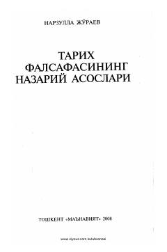

TFTarixni falsafiy tushunish va uning nazariy asoslariga bag'ishlangan ilmiy monografiya.
Ushbu monografiyada tarixni falsafiy tushunish tamoyillari, uning nazariy yechimlari hamda Sharq va G'arb tarix falsafasi maktablari tadqiq etiladi. Shuningdek, mustaqillik davri tarixiy jarayonlari, XXI asrda insoniyat va dunyo muammolari o'ziga xos tarzda talqin qilinadi.